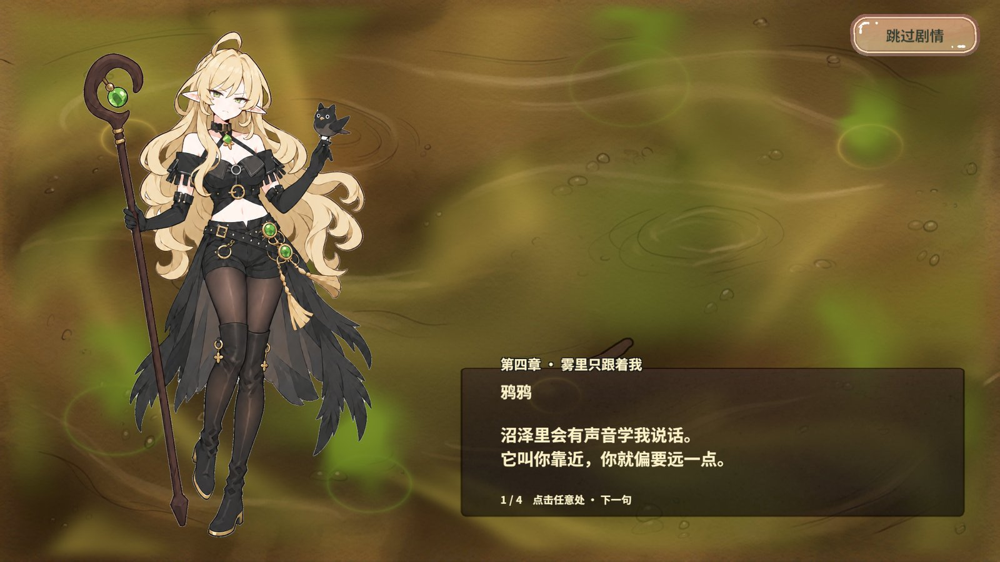
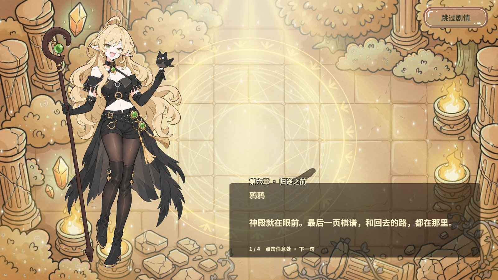
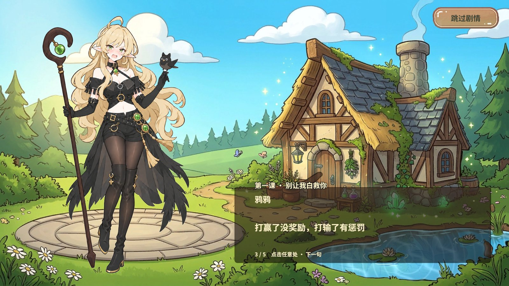
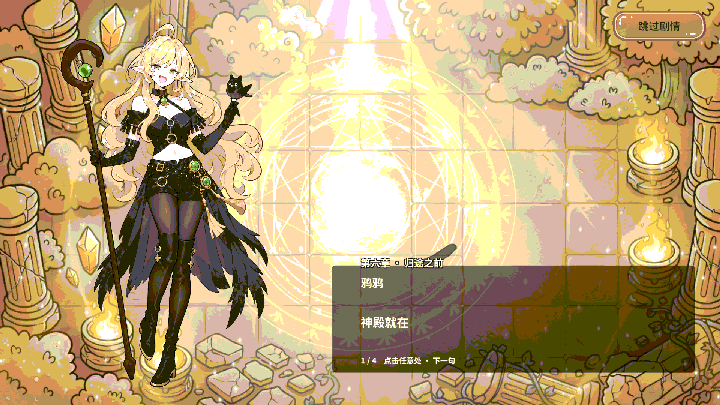

修复与验证
| 篇章 | 修改 | 实测结果 |
|---|---|---|
| 第四章首句 | 在两个完整句子之间加入换行，保留字词和标点。 | 真实沼泽原画下，两行都以完整句子收尾，末尾句号与“点”同一行。翻到下一句后显示正常。 |
| 第六章标题 | 剧情标题在绑定时配置一次深色描边。 | 真实神殿背景下，标题的浅金字与高光之间有深色轮廓，截图中可辨认完整标题。 |
| 教学引子第 3 句 | 改为“打赢了没奖励，打输了有惩罚”。 | 从更新的 PC AB 播放，打字完成后屏幕显示与配置一致，使用小屋背景。 |
实际画面







执行与范围
RevCLI 通过 asset.inspect 和 asset.set 修改实际 StoryBook，执行字体校验和项目资源构建。PC 和 Android 均构建了 82 个包，六章背景包保持独立。运行期仍由 Revolution 资源门面加载，描边由现有剧情 View 装配。
RevMCP 用 rev_discover 确认剧情 GM，rev_call 确认普通存档、StartScene 与真实 PC AB 模式，随后用 rev_run 执行 38 步，验证 chapter4、chapter6 和 tutorial 的屏幕文字、实际纹理、Shader 和退出收尾。跳过后章节背景引用归零，运行错误计数 0 → 0，finally 退出测试 Play 成功。
运行验收覆盖上述三个篇章和当前 PC Editor Play 分辨率。Android 资源通过构建，未在设备上执行。